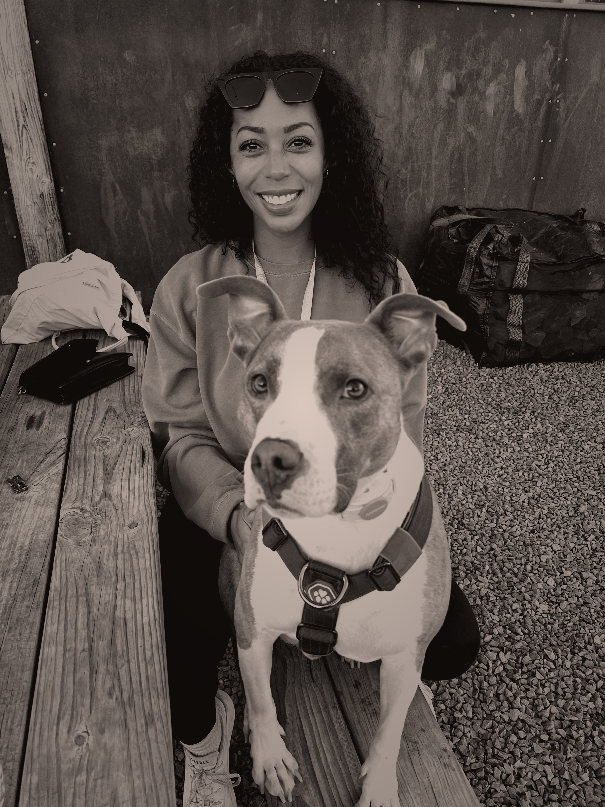

a facilitated developmental practice for men.
- responsibility.
- skills.
- capacity.
- relationships.
Operating principle
- Develop the skills, strategies, and capacity required
- to occupy the roles and relationships you choose
- in alignment with your integrity
- without outsourcing your responsibility or abandoning yourself
- regardless of external circumstances or the behavior of the people around you
By men, I’m referring to anyone who identifies and was socialized and conditioned as a man, navigating roles and relationships shaped by those expectations.
Objective
Self-sourced.
A self-sourced individual knows themselves, confronts themselves, and takes initiative and ownership of their own development.
They have a strong, trusting, healthy relationship with themselves and are internally motivated to grow and develop without requiring negative consequences to initiate change.
They behave in alignment with their integrity under pressure regardless of external circumstances or the behavior of the people around them.
They accept responsibility for their impact and the roles they choose to occupy.
This practice is focused on developing the skills, strategies, and capacity required to occupy our roles and interpersonal relationships in healthy, sustainable, and fulfilling ways.
Personal capacity expands through consciousness, effort, intentional practice, reflection, and integration.
Capacity is not simply what you are capable of. It is what remains available to you when you are under pressure, circumstances are not ideal, and your environment is uncomfortable.
Perspective
-
Relationships reveal, they don’t create.
- Partner
- Parent
- Leader
- Team member
- Friend
- Family member
Every role requires something different from us.
When we experience frustration, resentment, conflict, loneliness, burnout, disconnection, or repeated interpersonal challenges, our instinct is to treat the relationship and the dynamics we are inside as the problem.
The conversations keep circling. The fuse is getting shorter and shorter. You don’t always understand or agree with what’s being asked of you. You’re struggling to find the language to describe what you’re experiencing. The same conflicts return. You try harder, explain yourself differently, put in more effort. Yet somehow, you keep arriving back in the same place.
This practice treats those experiences as information.
Relationships do not create the gaps we have to fulfill our roles. They reveal them.
-
Your relationship with yourself.
Knowing yourself is a developmental practice of its own.
It requires learning to observe yourself accurately, confront what you find, understand your needs and limitations, recognize what you value, and distinguish who you actually are from the roles you perform and the external measures you have learned to use as evidence of your worth.
Over time, that relationship creates something difficult to manufacture externally: grounded confidence.
You trust yourself because you know yourself. You develop greater clarity about what you want, what you believe, what you are responsible for, and how you intend to behave under pressure.
There is a safety that comes from someone who is secure in their relationship with themselves. They do not require another person to regulate their sense of worth, reassure them of who they are, protect them from uncomfortable truths, or carry responsibility they are not capable of carrying themselves.
That safety and stability is energetic. Other people experience it too.
The stronger your relationship with yourself becomes, the stronger your external relationships become. You can participate in them from a more stable, healthy, confident place.
You cannot meet another person more deeply than you have learned to meet yourself.
-
Invisible to some, expected of others.
Social and relational systems redistribute unmet responsibility automatically, but not equitably.
The awareness. The regulation. The initiative. The anticipation. The repair.
Whatever goes unattended still has to happen.
It is absorbed by whoever is closest and most practiced.
That imbalance can be difficult to see from the side benefiting from it. There is no reference point for what isn’t happening because someone else has always made sure that it does.
On the other side, the person carrying it may have been conditioned to notice what others miss, anticipate what others don’t, and absorb what others leave behind for so long that much of it has become automatic.
For one person, it is expected by default.
For the other, it is simply how life has always worked.
-
The terms changed.
Men were historically expected and rewarded for production, provision, authority, and status. Self-awareness, emotional regulation, relational capacity, communication, and inner development were given considerably less importance.
Expectations have evolved.
Being a good partner or parent requires more than providing financially.
Being a good friend, colleague, or family member requires active participation in the relational responsibilities of those roles.
Leadership requires more than authority, competence, and results. People expect leaders to create trust, navigate conflict, communicate effectively, adapt, regulate themselves under pressure, and understand their impact on others.
Women have greater autonomy and choice in whether, how, and with whom they build their lives. The qualities required to sustain partnership change when partnership is no longer required for survival.
Relational capacity. Self-awareness. Emotional regulation. Communication. Repair. Adaptability. Anticipation. The ability to reorganize your identity as a role or relationship requires more of you.
Men were not historically expected or incentivized to develop many of these capacities.
The expectations are already here. The development required to meet them is now your responsibility.
Meet Emily
Professional

For 15+ years I have worked in environments where responsibility had real consequences. Commercial construction. Executive operations leadership. Scaling companies from ~$30M to ~$250M. High-accountability roles where ownership, avoidance, conflict, leadership, and blame were visible in real time because the cost of getting them wrong was significant.
Responsibility had measurable outcomes. Emotional responsibility rarely did. Yet emotional regulation, psychological safety, and interpersonal skills consistently shaped the quality of leadership, decision-making, team performance, and organizational outcomes whether they were measured or not.
I can read people, processes, systems, and dynamics quickly and deeply. I understand the difference between symptoms and sources and can identify what needs to change when people, roles, systems, and circumstances are not aligned.
My work has extended beyond operations into organizational psychology, organizational alignment, organizational design, talent development, and complex interpersonal dynamics. Some of my favorite professional accomplishments have come from recognizing potential others had not yet recognized in themselves and helping them develop into it.
Today, I advise women business owners on operational infrastructure and their relationship with their businesses. I also take on Organizational Alignment special projects focused on the relationship between people, structure, leadership, and strategy.
Throughout my career I have had a front-row seat to how men occupy positions of responsibility. How they collaborate. How they lead. How they respond under pressure. Where they avoid. Where they take ownership. What happens when they lack the skills a role requires, and what happens when they deliberately develop them.
Personal

My perspective has been shaped as much by my life outside of work as it has by my career.
I grew up with three sisters and am always surrounded by women through family and close friendships. My relationships with men have included close friendships, long-term partnership, and marriage. Together, I continue to gain insight into how women and men experience the same systems differently, where their perspectives diverge, where they misunderstand one another, and where they unknowingly recreate the very dynamics they are trying to avoid.
Understanding people has always been one of my deepest personal interests. I study human behavior through a wide range of lenses, from neuroscience to astrology, Human Design, history, epigenetics, and other frameworks that explore how people think, relate, make meaning, and change.
Helping people expand their understanding of themselves, others, and their experiences has become a common thread throughout my life, regardless of the environment.
Every business I have created has begun the same way. Not with an opportunity, but with a need I could no longer ignore.
My approach
I recognize patterns people struggle to see in themselves, identify what is producing them, and understand where those patterns lead if they continue.
Whether I am working with a business or an individual, my approach is the same. Understand how the existing operating system is functioning and what the environment is asking of it.
When those two are not aligned, tension, inefficiency, frustration, and conflict are the result. My role is to identify where that misalignment exists and facilitate the development required to restore alignment.
Here, that work takes the form of a developmental practice for men focused on building the interpersonal skills, strategies, and capacity required to occupy the roles and relationships they choose.
The Practice
The gap belongs to the person who has it.
Development begins by taking responsibility for yours.
You are here because you are experiencing tension in an area of your life that matters to you. Something is not responding to the effort you are putting into it.
A relationship. Dating. Fatherhood. Your family. Friendships. The people you lead. A business partner. Your team.
You have tried harder. Communicated differently. Explained yourself more clearly. Taken advice. Read the books. Watched the Reels. Listened to the podcasts. Maybe even gone to therapy.
Yet the same dynamics continue to repeat.
Whatever brought you here, you have already recognized something important.
The role you are occupying is asking for skills, strategies, or capacity that have not yet been intentionally developed.
The Practice / Your Relationships
-
Partnership
- You are in a relationship and continue to hit the same wall.
- You are actively dating and not experiencing the outcomes you want.
- You are intentionally preparing for a future relationship before pursuing another one.
-
Family and Friends
- Parenthood has challenged you in unexpected ways and you are looking for more skill or capacity to meet what the role requires.
- Co-parenting outside of a romantic relationship, where alignment does not feel available.
- Relationships with parents, siblings, in-laws, or extended family lead to tension and frustration.
- You feel stuck in a friendship or social dynamic and do not know how to move it forward.
-
Work
- Managing or leading people, where the interpersonal aspect is causing disruption, lack of trust, and challenges.
- Difficult dynamics with colleagues, a manager, a business partner, or your team remain unresolved.
The Practice / Your Responsibility
This practice requires participation.
The work does not happen during our conversations alone. It happens between them, where new skills are practiced, existing patterns are challenged, and greater capacity is developed through repetition.
My role is to understand you accurately, identify patterns you cannot yet see, challenge assumptions that no longer serve you, and facilitate your development.
Your role is to practice. To reflect honestly. To take responsibility for your own development.
The responsibility for your growth remains yours before we meet, while we work together, and long after our conversations end.
Awareness identifies the gap. Skills are deliberately practiced. Practice expands capacity. Expanded capacity changes how you occupy your roles.
The Practice / Your Skills + Capacity
What we develop is determined by the gap between what your roles and relationships require and what is currently available to you.
Skills are what you learn to do well. Listening. Communicating. Repairing. Recognizing. Regulating.
Strategies are how you learn to apply those skills in healthy, productive ways. Timing. Approach. Adaptation. Recognizing when something isn’t working and changing course.
Capacity determines what remains available to you under pressure. What you can hold, navigate, and access when circumstances become more difficult.
Depending on the person and circumstances, that might include development related to:
- Finding language for feelings, needs, expectations, and experiences
- Determining the right communication strategy, timing, and approach
- Recognizing and interrupting patterns in your own behavior
- Regulating yourself and remaining present under pressure
- Navigating conflict, initiating repair, and rebuilding damaged trust
- Receiving feedback without defensiveness
- Listening for understanding rather than preparing a response
- Recognizing what is and is not your responsibility
- Recognizing the difference between a boundary, request, expectation, and control
- Taking initiative and anticipating what requires attention
- Holding multiple perspectives at once
- Adapting when your current approach is not working
- Responding intentionally and in alignment with your integrity when circumstances become difficult
- Discerning what requires action, what requires attention, and what can be left alone
The Practice / Foundation
Foundation
Every man enters the practice through Foundation.
We identify patterns, find language for what you are experiencing and trying to communicate, develop practical strategies, and begin practicing the skills required to occupy your roles with greater responsibility, awareness, and capacity.
Foundation establishes a shared understanding of where you are today, what your life and relationships are asking of you, and where the gaps exist.
This is not a curriculum or predetermined agenda.
The work is customized around your life, circumstances, relationships, and the development they are asking of you.
Sessions are two hours each, held on camera, and intentionally paced over time.
Your development depends on lived experience between sessions. If there is no time to live differently, every session becomes theoretical.
This practice is not therapy or mental health treatment and should not be used as a substitute for either.
Choose the rhythm that matches the opportunities your life gives you to practice
Biweekly Rhythm
Every two weeks
Twelve weeks
Two hours each
For men whose lives provide frequent opportunities to practice and adjust.
What it gives you
- Tighter feedback loops.
- Earlier pattern interruption.
- More opportunities to practice and adjust.
- Recent experiences to evaluate while they are still fresh.
- Greater continuity between sessions.
Choose this if
- Waiting a month is costly, because you will have dozens of opportunities to reinforce the same pattern before we meet again.
- The relationship is active every day.
- You are parenting every day.
- Work tension is regularly present.
- You are encountering the same dynamic over and over.
Monthly Rhythm
Monthly
Sixteen weeks
Two hours each
For men whose lives provide less frequent opportunities to practice and adjust.
What it gives you
- Enough time for new experiences to occur between sessions.
- More relevant situations to practice within, rather than manufacturing opportunities.
- New information about what is changing, what is holding, and where you are still getting stuck.
Choose this if
- Meeting every two weeks would not create more value, because life has not produced enough new information yet.
- You are single or dating, so relational opportunities arrive weeks apart rather than daily.
- You see your family infrequently.
- The challenges at work happen occasionally.
- You know there is something you want to change.
Size of the practice is limited so every man receives the depth of attention, preparation, and presence this work requires.
The Practice / Membership
Ongoing Membership
Foundation establishes the shared understanding ongoing work builds from.
Ongoing Membership builds on that foundation rather than starting over. As skills accumulate, we continue developing from what is already there.
Over time, the work becomes increasingly individualized. Accumulated understanding allows us to spend less time locating what is happening and more time working directly with what your life is asking you to develop.
Membership provides the continuity to keep building as your skills, capacity, roles, and life evolve.
Applications for Ongoing Membership become available after Foundation is complete.
FAQ
Why work with a woman on your development?
Being a woman isn’t what qualifies me to do this work. I can read people, processes, systems, and dynamics quickly and deeply, identify what’s getting in the way, and help develop what’s needed next.
But gender is relevant to the work. Men and women are conditioned differently. We learn different expectations, develop different skills, and are rewarded for different behaviors.
When conditioning itself is part of what we’re examining, that difference becomes leverage.
And regardless of gender, I’m exceptionally good at understanding and developing people. Like, really good.
Do you only work with men?
LGBTQIA+ community members, BIPOC individuals, and people from marginalized communities are welcome here. Your identity is honored, celebrated, and respected here.
By men, I’m referring to anyone who identifies as a man or was socialized and conditioned as a man, navigating roles and relationships shaped by those expectations.
This practice takes a gender-conscious approach to development. I believe the ways we are socialized and conditioned by gender shape how we understand ourselves, what we are taught to value, the skills we are encouraged or discouraged from developing, the roles we learn to occupy, and how we relate to other people.
That conditioning does not exist in isolation from race, sexuality, gender identity, class, culture, disability, or other aspects of a person’s lived experience. Those differences matter and are treated as relevant context rather than something to be flattened or ignored.
The purpose of a gender-conscious approach is not to prescribe what a man should be. It is to understand the position someone is developing from, what has shaped them, and what their life and chosen roles are asking them to develop now.
This practice focuses on helping men develop from where they are sitting in the systems and relationships they occupy, with the understanding that individual development also affects the relationships, workplaces, families, and communities around them.
Is this therapy?
No. This is a developmental practice focused on deliberately building interpersonal skills, strategies, and capacity. It is not therapy, counseling, mental health treatment, or a substitute for care from a qualified mental health professional.
Can my partner attend?
No. This is individual development work. A relationship or dynamic may be the precipitating factor in your decision to do this work, but the skills, strategies, and capacity developed are intended to belong to you and support you across all areas of your life.
Can I work on more than one area of my life?
Yes. These capacities are not neatly siloed. We can work across areas as they become relevant.
Are sessions in person or virtual?
Virtual. Sessions are held on camera. In-person sessions are not offered at this time.
Why are sessions two hours?
One hour is rarely enough time for this work. Understanding what has happened since we last met, gathering relevant context, and identifying what requires attention takes time. Two-hour sessions allow us to do that without sacrificing the time needed to actually work through what we find.
What is your rescheduling policy?
The timing and cadence of Foundation are intentionally designed, and the commitment you make when joining the practice is taken seriously. Part of this work is accountability, which includes signing on with integrity and prioritizing the time you have committed to it.
Unforeseen circumstances happen, and reasonable exceptions can be accommodated when necessary. The complete rescheduling and cancellation policy is provided for review before you commit to the practice.
What happens after I apply?
I review every application myself. Applications are reviewed for alignment with the work and current practice capacity, and submitting one does not guarantee acceptance.
If your application is accepted, you will receive next steps for joining the practice, including a more in-depth Foundation questionnaire. Completing that questionnaire is required before we begin working together.
Disclaimer
This practice provides developmental guidance and facilitation. It is not therapy, counseling, mental health treatment, medical or healthcare services, legal advice, financial advice, or any other licensed professional service.
The work is intended to support personal development and does not diagnose, treat, prevent, or cure any mental or physical health condition. It is not a substitute for care from a qualified mental health professional, physician, attorney, financial professional, or other licensed provider when those services are appropriate.
You remain responsible for your decisions, actions, wellbeing, and for seeking qualified professional support when needed.